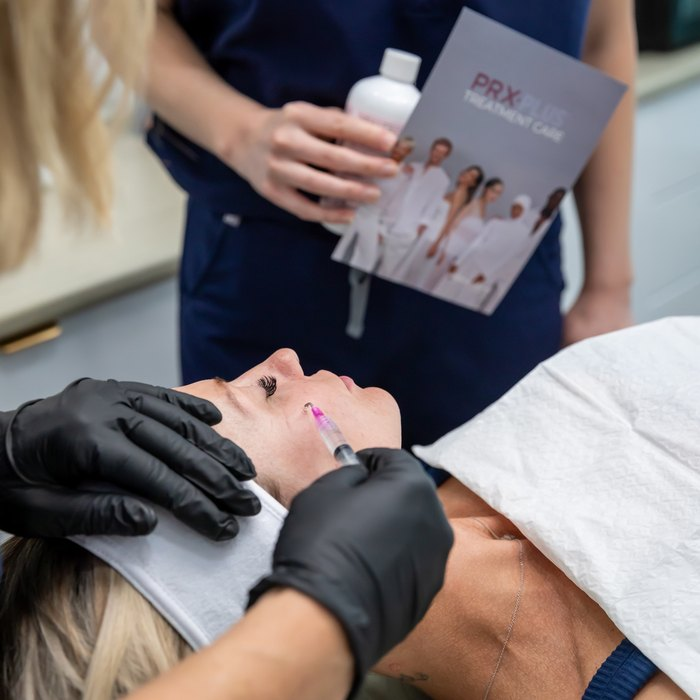

The face that deflated
Some faces age by wrinkling. Others age by deflating - and the second one is far harder to name, which is why so many people never get it properly treated.
Take the free skin assessmentThe fat pads that hold up the mid-face shrink and slide with age. The cheeks flatten, shadows appear under the eyes, the jawline blurs and the corners of the mouth turn down - all without a single new wrinkle. You look tired in photographs and you cannot work out why.
You will focus on the hollow you can see - usually under the eyes. But tear troughs are very often caused by the cheek above them having dropped, not by the trough itself. Treat the trough and you can make it worse. This is exactly the kind of mistake that a full facial assessment prevents.
Tracey assesses the whole face and its structure before she treats any single part of it. Volume is restored where it was genuinely lost, in the order that supports the face - which is often not the place you would have pointed at.
Overfilled faces are not the result of too much product so much as product in the wrong places. Tracey's stated bias is towards natural enhancement, and she would rather do less and have you come back than do too much and have you regret it.
What we would use
Which of these is right for you depends entirely on your face. That is what the assessment decides, and it is why Tracey will not quote you before she has looked at you.
A lift, without surgery and without a general anaesthetic.
Consultation required Advanced Nurse TreatmentsPuts back the structure that went missing, in the places it actually went.
Consultation required Advanced Nurse TreatmentsPermanently reduces fat in one stubborn spot.
Consultation requiredEvery treatment is assessed individually. A consultation with a registered nurse is required before any procedure, and individual results vary.
The questions people actually ask
Not if the assessment is done properly and the restraint is real. This is the single most common fear people bring in, and it is a reasonable one.
Some volumising treatments can be dissolved. That is a conversation to have at consultation, before anything is done, and Tracey will have it with you.
No. These are non-surgical treatments. There is a point at which surgery is genuinely the better answer, and Tracey will tell you when you have reached it rather than sell you something that will not deliver.
It depends on the treatment and on you. Tracey will give you a realistic range rather than a best case.
Free · 60 seconds · No obligation
Take the free skin assessment. Five questions, and you will get back a straight read on what is driving the change and what would actually help - whether or not you ever book with us.